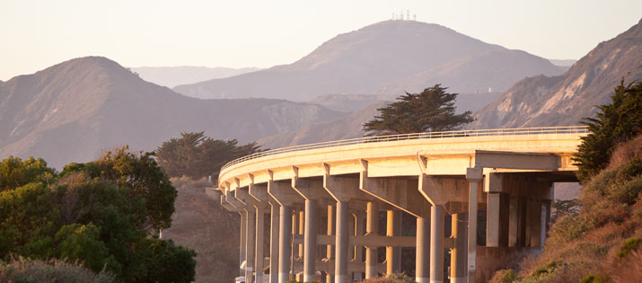

Learn more about our tours
In this section you'll find frequently asked questions from all our tour packages. Some FAQ sections contain links to pages with more detailed information about specific packages and their options. Be sure to read each section carefully before booking a tour. We want you to choose the tour that is perfect for you, your activity level, and your interests!
FAQs
Click on a tour name to jump to that tour's FAQ
- Backpack Cal
- California Calm
- California Hotsprings
- Cycle California
- From Desert to Sea
- Kids California
- Nature Watch
- Snowboard Cal
- Taste of California
Backpack Cal
- What does "tour difficulty" in the tour description mean? Is "difficult" really difficult?
- OK, fair enough question. Difficulty ratings are obviously in the eye of the beholder. At first we used the Class ranking system that US Parks have used for over 75 years. The problem with that system is that it ranks Classes from Class 1 to Class 5. Only Class 1 and 2 refer to hiking, Class 3 and above are reserved for climbing trails. Since only a small portion of our tours have any climbing (and only optional climbing at that) we devised our own difficulty scale. If you are in good physical shape, you should be able to handle anything our tours throw at you. However, the difficult rating is difficult, and you should read the tour description carefully before committing to the tour. Read our difficulties ratings here for more detail.
- Do I get a refund if the trail was too hard for me?
- We're sorry, but no. We feel that between the detailed tour description and the difficulty ranking we have set adequate expectations about what level of physical ability is required for each tour. If you feel a tour might be too difficult for you, please feel free to contact one of our agents, or try one of our easier tours to start out.
- What can I NOT bring into the camp sites?
- For the most part, use common sense. Remember that our camping is in pristine areas of California wilderness, so we have a strict bring-in-in/take-it-out policy. Leaving behind trash or refuse will not be tolerated. Also, drugs and/or weapons are not tolerated in any camping area and will be grounds for immediate cancellation of your tour with no refund. We also ask that you leave your guitars at home. This will prevent any unfortunate "Kumbaya" incidents of having your guitar broken over your head. We appreciate your understanding.
- Can I use your backpack?
- No, bring your own.
- Do you offer self-guided tours?
- Most of our tours can be taken as a self-guided tour. We will provide you with a map, camping sites, and the cell phone number of the main group tour guide. Due to the potentially hazardous nature of the Death Valley Trek and MT. Whitney Climb self-guided tours are not allowed.
- What do you mean by hazardous?
- You could die. We don't want that.
- Can you recommend some gear?
- Yes we can. Take a look at our tour guides gear recommendations
California Calm
- What should a bring to the spa?
- Be sure to read your tour description carefully. For the most part, what you need to bring depends upon the package and spa you will be attending. Some spas are full service, and supply all materials, either in room or at the spa itself. If you are not taking an overnight tour, be sure to check with the spa to make sure they have arrangements for storing valuables.
- Are massages performed... you know...
- Again, it depends upon the spa and your personal preference. Most spas cater to your personal preferences. If you wish to wear the robe only, feel free to do so. Professional massage therapists are trained to drape throughout the massage. It is also quite common for guests to wear under garments or bathing suits.
- Are the packages restricted, or can I use all areas of the spa?
- In negotiating our tours, we make sure guests have access to the entire spa, regardless of package. If you are not enjoying your spa experience, or would like to try something else, feel free. Please understand that additional charges may apply.
- What do I need to tell the spa?
- Based on your package, certain spa treatments might be restricted if you are pregnant, nursing, injured, or have specific allergies. Make sure you inform the spa well in advance of your appointment of any current conditions that might prevent you from partaking in your spa treatments. If concerns are caught early enough, the spa will make arrangements for an alternate activity.
California Hotsprings
- How late do the hot springs stay open?
- Obviously it differs by resort or area, but most hot springs will close by 11pm. If you want later access, be sure to contact your resort for availability
- How hot do the hot springs get?
- Not all hot springs are the same, but the ones on our tours average between 100° and 117° F. Seasons do not affect the hot springs, although temperatures have been known to vary slightly throughout the year. Certain health conditions can limit the enjoyment of the springs, or even become dangerous in certain cases. Please let the resort staff know of any medical conditions.
- Do hot springs really have medicinal benefits?
- It depends on who you ask. The FDA has come out strongly against the majority of claims made by proponents of mineral water treatments. However, studies have shown that inflammation and circulatory problems associated with vascular deficiencies have benefitted from mineral water treatments such as hot springs. Explore California makes no claim as to the medical benefits of hot springs, but we can say from first hand experience that they are relaxing and therapeutic!
- What type of minerals are found in hot springs?
- Although there are always slight differences, most springs contain calcium, magnesium, sodium, potassium, chloride, and sulfur. The sulfur can result in an unpleasant smell if found in high amounts, but is otherwise harmless.
- Are the springs chlorinated?
- It depends. If you attend a hot springs at a resort, it is very likely that the pool or spring will be chlorinated for guests comfort. In the more natural tours we offer, the pools are just that, natural and pristine.
Cycle California
- Does Explore California provide bikes?
- It depends on the tour. Some of our tours are geared towards biking enthusiasts who are bound to have better bikes than the ones we'd provide. Other, more scenic tours, have a bike rental option that will provide a standard bike for an additional charge. If the tour description does not have that option then no bike rental is available.
- Do we have to ride a certain pace?
- For the most part, no. Even on the two or three day excursions, Explore California has a chase vehicle that is tasked with ensuring everyone makes the overnight. If there is an area you would like to explore on your own, let the staff know and we can arrange a pickup time for you.
- The mountain bike tours mention bringing safety equipment. Like what?
- Well, a helmet, of course. Explore California will not allow riders on any course without a helmet. For the more difficult trails, bikers will need kneepads and wrist guards as well. No exceptions.
- What happens if my bike breaks during a tour?
- Well, if it's your bike than we're very sorry to hear about it. If it is one of our rentals, we will make arrangements to either have the bike fixed, or a replacement bike provided.
From Desert to Sea
- Why is it not named "From the Desert to the Sea?"
- We feel that the word "the" is used too much as it is.
- The Salton Sea is smelly
- Yes it is. However, we feel you should focus on the fact that you are in a very unique and pristine place. The salinity levels are off the charts, which results in huge amounts of fish-kills throughout the year. This, combined with the mineral slag that runs off the sea, contributes to a mighty aroma. We can tell you that on day two you don't notice it as much.
- Can my friends ride with us on the Mojave tour?
- No. We know the road is open and free to everyone, and we've had biker's attach themselves to the pack in the past. However, we would like to point out that all our stops along the way are pre-negotiated in price and number of people based on the tour reservations. If extra people show up, there will be not enough space. We can't keep your friends from riding along with you, but we can cancel your tour. Thankfully that has not had to happen as of yet, but we are understandably strict regarding this rule.
- Does the Joshua Tree tour feature the U2 tree?
- Yes! Although now dangerously close to dying from all the abuse it has taken from tourists and U2 fans, "the" Joshua Tree is part of our tour.
Kids California
- I don't see anything about scheduling a pick-up date for my child.
- That's because you're supposed to go with them. Our Kids California trips are not camps nor are they day-care. Spend some quality time with your kids and have fun, we promise you'll enjoy it.
- Are shuttles provided for the LA tour?
- Yes! However, it should be noted that shuttles leave from the scheduled hotel at a specific time. Due to the amount of people on the tour and the number of events, no individual rescheduling is allowed. We will be happy to assist you in locating alternate transportation if your schedule does not coincide with the shuttles.
- We didn't see any dolphins on our Blue Dolphin tour.
- Well, dolphins, for the most part, are wild animals. Some tours are brimming over with dolphin goodness, while others (sadly) catch the dolphins on an off day.
- Can we swim with the dolphins?
- No. Explore California believes that the dolphins, and their habitat should be respected. Out of concerns for the safety of the dolphins and the guests we do not allow close interaction.
Nature Watch
- Are children welcome on the Endangered Species tour?
- Yes! Children 10 and over are welcome on this tour. However, some of the areas we travel to are very sensitive and others are very remote. Please keep a close eye on your child and make sure he or she understands the very strict policies we have around preserving those habitats. We feel that these tours are wonderful educational opportunities and that they are perfect for kids!
- Do we need hiking gear for these tours?
- It depends on the tours. For the Endangered Species and Fossil Tour, yes. For the Monterey Aquarium tour you just need a comfortable pair of shoes.
- Can I keep any fossils I find?
- It depends. Certain fossils (old shells, trilobites) are so common that they are of little use to the archeologists on site. However, each fossil must be analyzed and approved before it is allowed off site. No exceptions.
- Are the nature trips seasonal?
- California enjoys mild weather all year, and most of our tours are available no matter what the season. However, certain tours have restrictions based on rainy seasons or animal migration. Check with the individual tours for any date restrictions.
Snowboard Cal
- Can I bring my own equipment?
- Of course! Rentals are provided for anyone who needs them, but you are more than welcome to use your equipment instead.
- I tried to register and it said "tour full" why is that?
- Certain snowboard tours feature "express lift" tickets which limit the amount of time you spend in line and even offer passes to private slopes. As you can imagine, these tours have a limited amount of tickets available. Book early for best results.
- Should I bring any other equipment beside the rental equipment?
- While you don't have to, we recommend a good set of goggles and a quality toboggan or hat. Each resort features a full-service pro shop, so anything you leave at home will be available for purchase on the slopes.
- Why don't you offer any wilderness trails?
- Based on past tours, we find that a controlled environment within a resort setting provides the highest amount of entertainment and safety for our guests. Many of the resorts we tour have wilderness trails available by request, although they are not part of your package.
Taste of California
- Are the tours age-restricted?
- Yes. Any tour that features a winery are available to adults 21 and over only. No exceptions.
- One of the tours I want is unavailable, is it cancelled?
- No! Many of our Taste of California tours are based on agricultural production. Those tours are typically only offered during growing or harvesting season.
- Are there choices for meals based on dietary restrictions?
- Yes! Most of our tours feature specific food types, but all locations have options for vegetarian, vegan, and gluten-free diets. To find out more contact the tour provider.
- Is there a dress code on the wine tours?
- For the most part, no. We want you to be comfortable while you are with us. We do ask that you make sure that the clothing be appropriate, especially for tours that feature a fine dining component.
 California Calm
California Calm From Desert to Sea
From Desert to Sea Taste of California
Taste of California